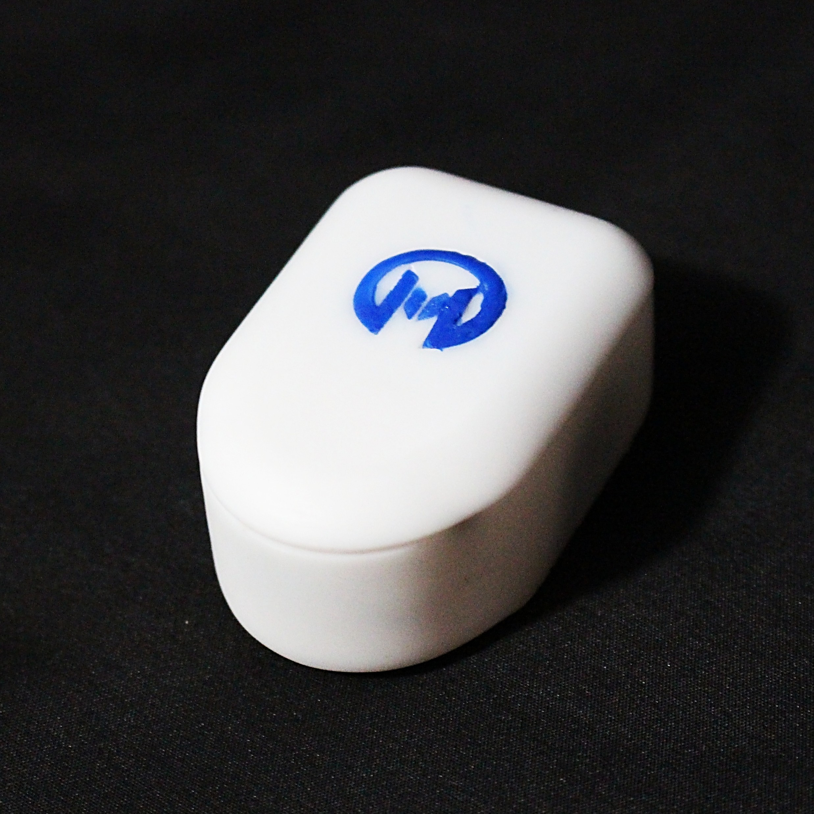
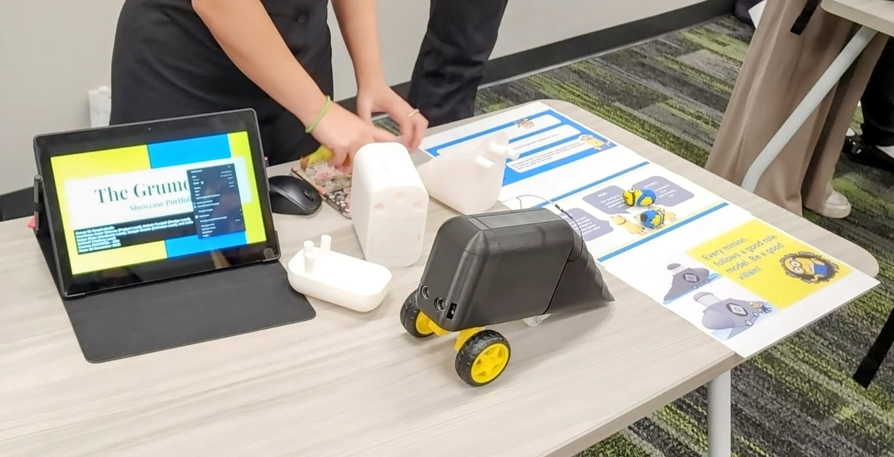
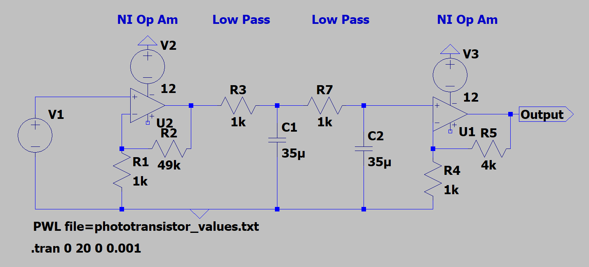
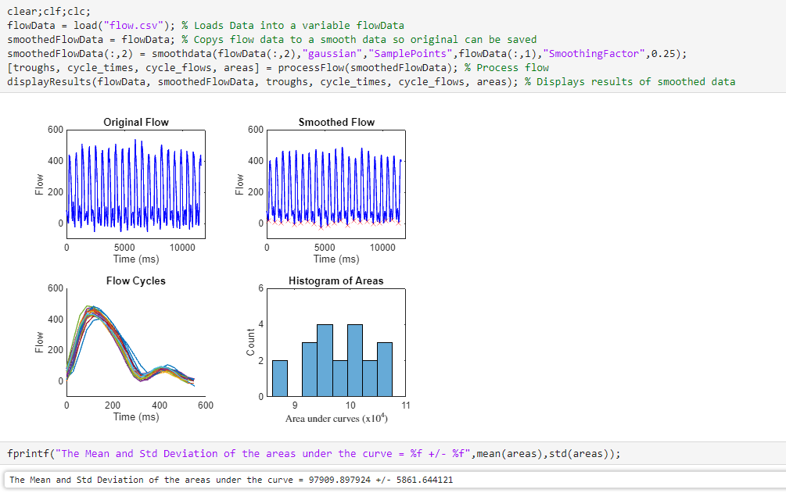

Projects

FEATURED PROJECT · MOFFITT CANCER CENTER COLLABORATION
PERIFUSE: Localized Immune Cell Delivery
Skills: Embedded C, KiCad, Custom PCB Design, Low-Power Electronics, CAD, Microfluidics, Soldering, Experimental Testing
Developed a wearable programmable cell-delivery prototype in collaboration with Moffitt Cancer Center, with my contributions focusing on the ATtiny1616 controller, custom PCB and embedded firmware, pump electronics, and power testing.
Explore PERIFUSE →RESEARCH INSTRUMENTATION
Ophthalmology Instrumentation Research
Skills: Embedded Systems, Sensor Interfaces, Python, Data Acquisition
Developed acquisition tools for USF ophthalmology research, including a Windows-ready Python interface for approximately 15 Hz sensor measurements.
View ProjectEMBEDDED SYSTEMS · SENSOR INTEGRATION
SunScream: UV Monitoring & Sunscreen Analysis
Skills: ESP32, ATmega328P, GUVA UV Sensor, Bluetooth Serial, Python/Tkinter, KiCad
Two distinct UV-sensing builds: a Bluetooth exposure monitor with an audible alert, and a desktop GUI that compares baseline and sunscreen-treated UV readings.
DIGITAL HARDWARE
FPGA Digital Design & SPI Display
Skills: VHDL, Vivado, Artix-7, FSMs, Simulation, SPI
Built and simulated digital hardware with an Artix-7 FPGA, including an SPI-driven ST7789V TFT display test.
View Project
Gru-mobile: Autonomous Toy Development
Skills: Embedded Systems, Microcontrollers, C Programming, 3D Printing, Team Leadership
Designed a marketable children's toy with an ATmega328P microcontroller for real-time motion tracking using infrared and ultrasonic sensors.
Read More
Analog Signal Processing: Pulse Oximeter
Skills: LTspice, MATLAB, Circuit Design, Signal Processing
Designed and simulated a signal filtration system for LED-based pulse oximeters, optimizing signal clarity for accurate readings.
Read More
MRI Cardiac Blood-Flow Analysis
Skills: MATLAB, Digital Signal Processing, Biomedical Data Analysis
Used MATLAB to smooth left-ventricular flow data, identify cardiac cycles and compute per-cycle area by trapezoidal integration.
Read More